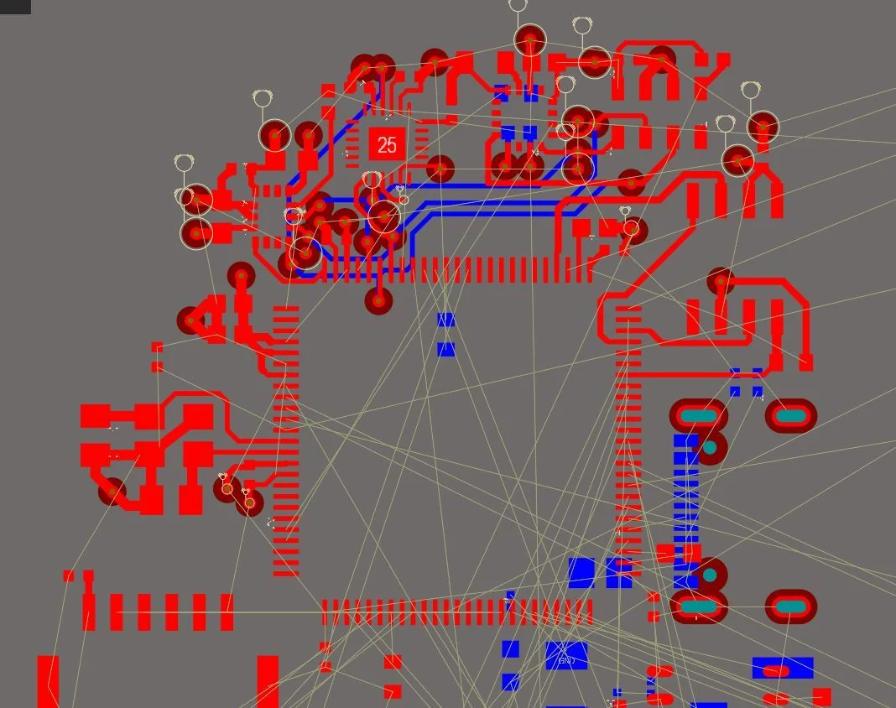

FPGA and hardware · Hardware design
STM32 flight controller PCB design for competition UAVs
A flight controller board for Penn Aerial Robotics' competition UAVs, designed in Altium Designer around one STM32F427 by a team of six. My part was power management, the flight-data memories and power sensing.

Our slides show a full schematic and a partly routed layout in December 2025, and the board was fabricated after that. The targets were more than 50% lower cost and 30% lower weight than a commercial Pixhawk.
The problem
Penn Aerial Robotics designs and builds aircraft for competition. In fall 2025 our project team set out to build a flight controller from scratch.
The yardstick was a commercial Pixhawk, compared on size, weight, power draw and cost (SWaP-C). The targets were a cost cut of more than 50% and a weight cut of 30%.
Our slides picture a Pixhawk 6C Mini. PX4, the open-source autopilot project, lists it at 39.2 g, with separate processors for flight management and I/O.
What I built
Six of us designed the board in Altium Designer. My part was power management, the flight-data memories and power sensing. I was on the team from September 2025 to January 2026.
One STM32F427VIT6 does everything: there is no second I/O processor, so the receiver and the servo outputs connect straight to it. PX4 lists the same STM32F427VI for the Pixhawk 1.
Four sensors share one SPI bus, each with its own chip-select line. Three also have a data-ready line, which lets firmware read a sample when the sensor has one.
Power comes from USB at 5 V or from the battery, and linear regulators make 3.3 V and 1.8 V from the 5 V rail. The 1.8 V part is an AP2112K-1.8, rated for 600 mA. The ICM-20948 datasheet limits that sensor's I/O supply to 1.71 to 1.95 V. Notes on the sensor schematic sheet allot 0.45 mA to the magnetometer and 1.4 mA to the barometer.
The microcontroller gets a valid flag for each power source, plus sense lines for the 5 V rail and the battery's voltage and current. The pin sheet also carries the team's safety signals: a safety switch input, a safety LED and an alarm output.
- Sensors: ICM-42688-P and ICM-20948 IMUs, MMC5983MA magnetometer, MS5611 barometer
- Memory: an FRAM on its own SPI bus, plus an SDIO bus
- Links: CAN, USB, I2C, five serial ports, external M9N GPS
Results
There is no measured result on this page. The team's December 2025 slides show the schematic drawn and layout started: routing was in place around the top of the microcontroller, and the signals out to the connectors were still unrouted.
The board was fabricated after that. The images on this page all come from those slides, so they show the design and not the fabricated board.
Limits and next steps
Every number above describes the design. No current, weight or cost figure here was measured on the fabricated board.
One open point in the slides is the ICM-20948 interface. The microcontroller's I/O runs at 3.3 V and that sensor's at 1.8 V, so its SPI lines need level translation. The slides do not show that sheet.
The team's December 2025 timeline listed the remaining steps: finish layout, contact manufacturers, then program and test the board. The board has been fabricated since then, and this page reports nothing on programming or testing.